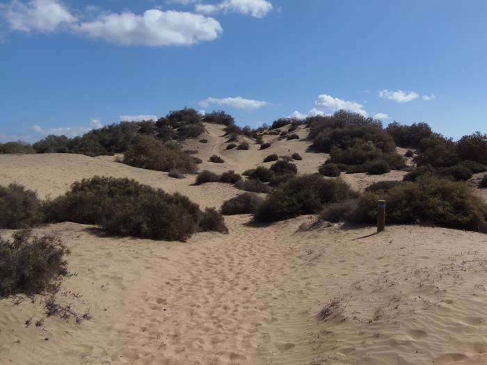

Ruta central
De los tres principales senderos del Reserva este es el de menor longitud. Normalmente se realiza a continuación del Sendero 1 para regresar al Centro de Interpretacion completando asi un bello itinerario circular o proseguir la marcha conectando con el Sendero 3 / ruta Exterior. El primer tramo de este sendero coincide con el circuito de excursiones en camello, atracción turística que confiere al lugar un exotico ambiente sahariano al tiempo que permite contemplar la vafiada avifauna autóctona e introducida que en su entorno se concentra.
El itinerario en su recorrido serpenteante hacia el naciente atraviesa tramos rocosos y de arena endurecida pasando junto al una de sus mas altas cotas, el Alto de la Hoya Quemada antes de llegara su fin en las proximidades de la terraza-mirador donde finaliza Está balizado por poste con banda (amarilla)
Tiempo estimado:33 minutos